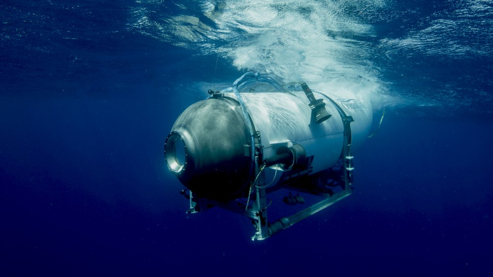

The missing craft is owned by OceanGate and is named Titan. The sub is designed to carry five people:
Right now, nobody knows. According to the US Coast Guard, about an hour and 45 minutes after the sub launched on Sunday, the submersible's command ship, the Polar Prince, lost contact with the vessel about 900 miles (1,450 kilometers) east of Cape Cod, Massachusetts.
